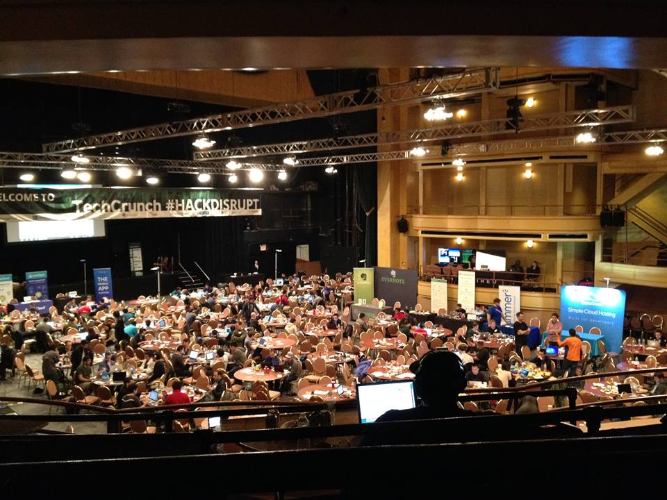
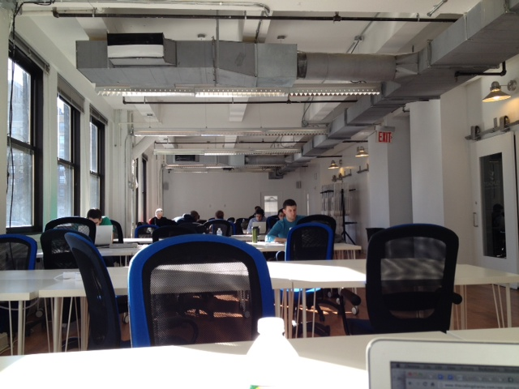

Tech Meetups in NYC This Week
Source: Meetup.com API
Inspired by A Hacker's guide to the Bay Area, this guide is intended for "hackers" interested in the tech scene in NYC. I write from the perspective of a 20-something front-end web developer who enjoys collaborating at hackathons, blogs about learning how to code, and enjoys recording music and the occasional bagel. You can follow me LPnotes.
▲ The markers above are updated automatically. Click on a marker for more information about an upcoming meetup.
I started frequenting tech meetups -- mostly via meetup.com -- in 2013. I had just transitioned into a full-time front-end web development role at a progressive non-profit, had gone to my first hackathon in November 2012, and was thirsting to meet other developers.
To be honest, I think much of my enthusiasm for tech meetups stemmed from the fact that I worked at a completely distributed office -- which meant that everyone worked from home. I loved interacting with my co-workers online, but to be able to talk shop about what technologies people were using or learning, and to share about victories and struggles, was a breath of fresh air away from the lonely intensity of the computer screen.
Silicon "Alley" can't quite compete with Silicon Valley for the tech mecca trophy, but it is growing -- and the tech industry is fast becoming NYC's second largest sector. The city is big enough that there are often multiple meetups or hackathons going on at once, but small enough that I've met acquaintances that have become friends.
More than 1000 tech and digital companies proudly show off their "Made in NY" labels; you can check out the full list of NYC-based tech companies here.
Hackathons happen quite frequently during fair weather (at least every other weekend, it seems), and are great places for meeting other people in the tech scene. You do NOT need to be an expert programmer, already have a team, or already have an idea about what you want to build when you show up. TechCrunch hosts a hackathon in NYC once a year, Angelhack shows up a few times a year, an extremely laid-back Music Hackathon takes place approximately every month, and NYC headlined NASA's SpaceApps Challenge hackathon in 2014.  CAPTION: I was totally sleep-deprived when I took this picture in the early morning hours of the hackathon.
Gary's Guide and Alley NYC are both great weekly mailing lists to be on if you want the latest news about upcoming hackathons in the city.
Here's a little secret: come to Alley NYC between 12pm-4pm on Sundays (when there isn't a hackathon taking place), and prepare to co-work with friendly Hacker Hours, Code Crew, or Python meetup members. Think of the experience as a cross between a study hall and a "productive" networking party. Bring your laptop, say hello, feel free to ask for help if you're stuck on a specific coding issue, and help others if you can.  CAPTION: Alley NYC on a quiet late Sunday afternoon.
Just to give you a sense of the other types of meetups that happen in NYC:
Some of my favorites:
A lot of good food here.
Yes, finding a good apartment in NYC can be tough. In my experience, Craigslist can be helpful, but roommate searching via your network of friends (or anyone you might be acquainted with) is even more helpful. Some people swallow the fees and use brokers to some success.
Unless you live more than 15 minutes walking distance from a subway station, trust me -- you won't need a car! The subways can be confusing during the weekend when the local tracks run express or when parts of the subways are shut down, but in general you'll be able to make your destination with a couple of transfers along the way. If you get lost during your first few weeks here, don't be afraid to ask a stranger for directions. The buses in the city are also a convenient way to get around. You can ride on them for the same price as a subway ride. Most people who live in NYC buy monthly subway passes, which allows them to take a subway or a bus as many times as they want.
A 3-month writer's retreat for programmers. They have a laudable social rules contract that calls for no "well actuallys" and no "feigned surprise."
Specializes in Javascript.
A Ruby on Rails academy. Tuition not due until after you land a job.
The Flatiron School takes students through a 12-week full-time intensive training regime in web development (with a focus on Ruby on Rails).
The meat of General Assembly's courses are 3-4 month long front-end or Ruby on Rails web development courses. They also offer several weekend-long or day-long or hour-long short-term courses. The best way to find out about their course offerings is to sign up for their mailing list.
NYU's School of Continuing and Professional Studies offers a certificate in web development.
Between the Metropolitan Museum of Art, MoMA, Central Park, Prospect Park, other interest-based meetups (writing, Harry Potter, Reddit), comedy shows, Broadway, rock shows at Madison Square Park, concerts at Lincoln Center, rock climbing in Brooklyn, free weekly summer movies at Bryant Park... take your pick.